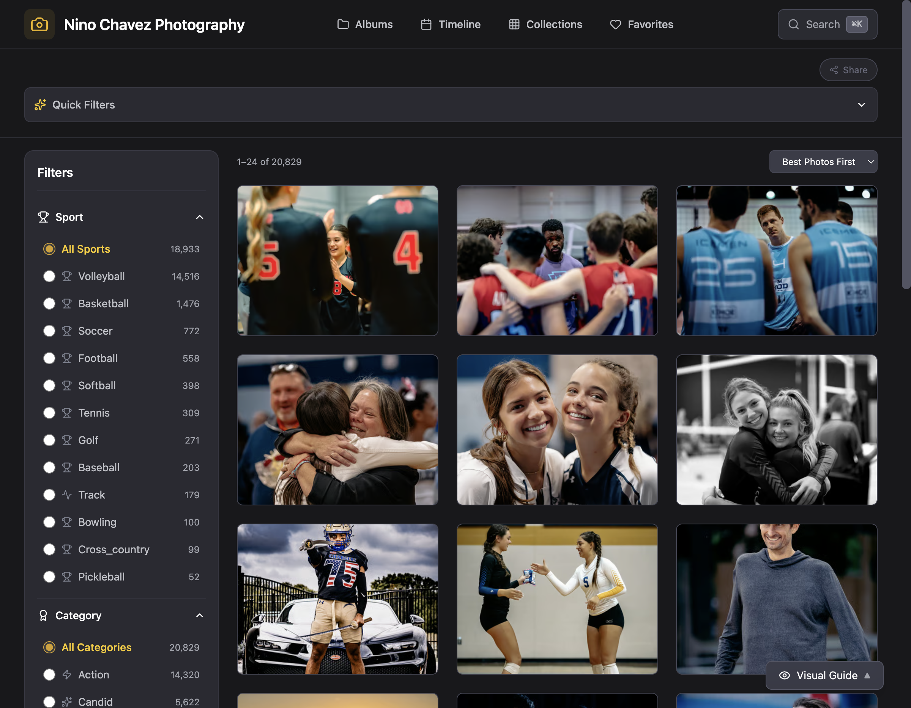

The find-my-photos journey
Find my photos.
An athlete makes a play they're proud of and wants to see it. The library answers that — search 20,829 photos by event, sport, or jersey, and take your moments with you.

Shipped surface — live at ninochavez.co/photography/explore. Jersey-number / jersey-color sightings (written by the #10 ingest) make a new event findable the moment it lands.